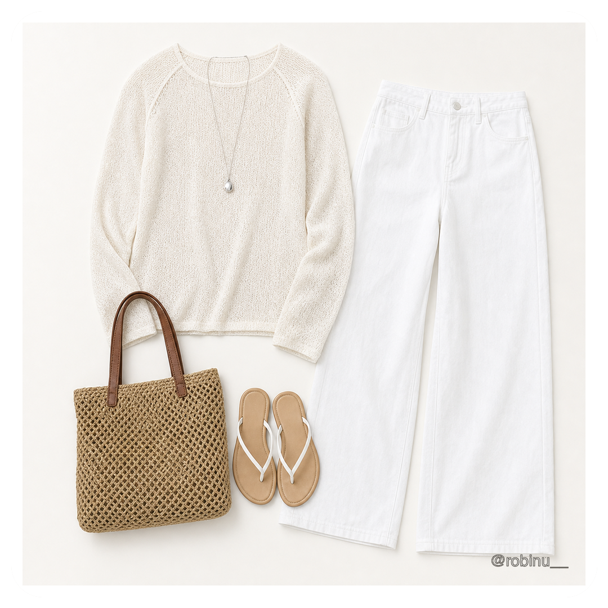
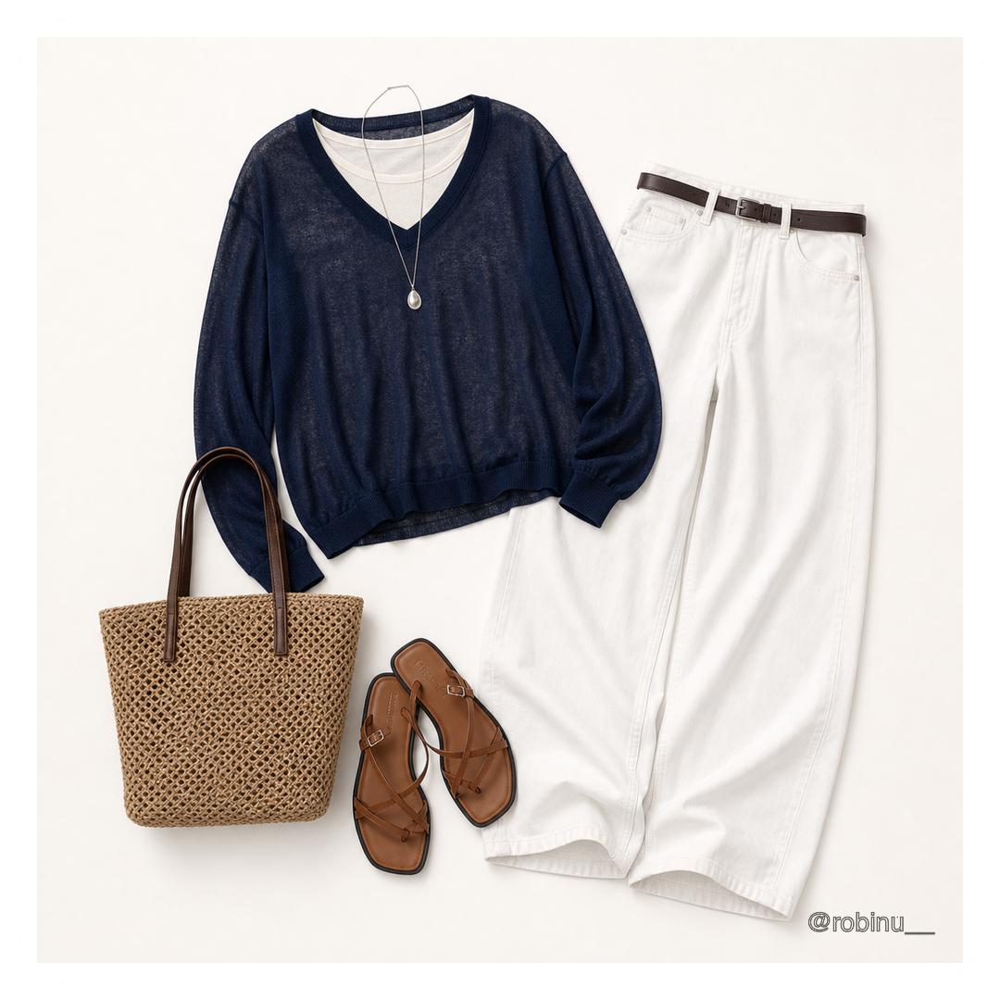
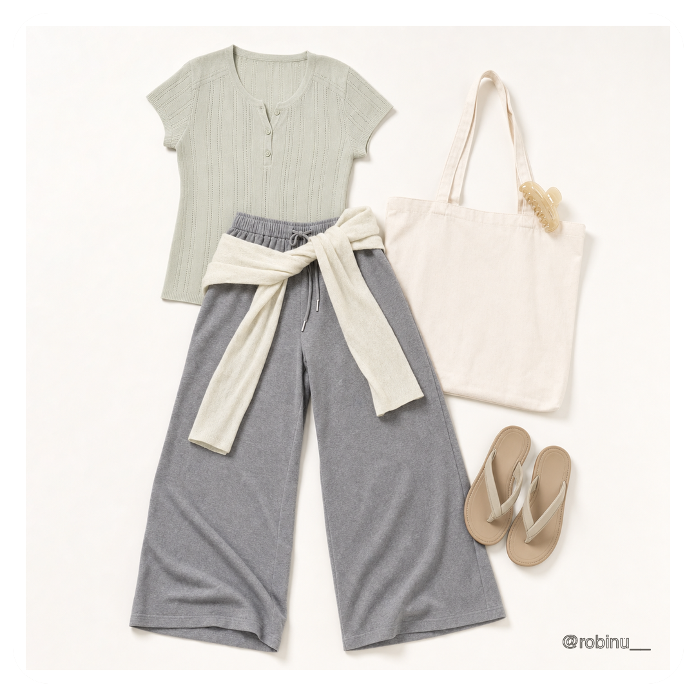
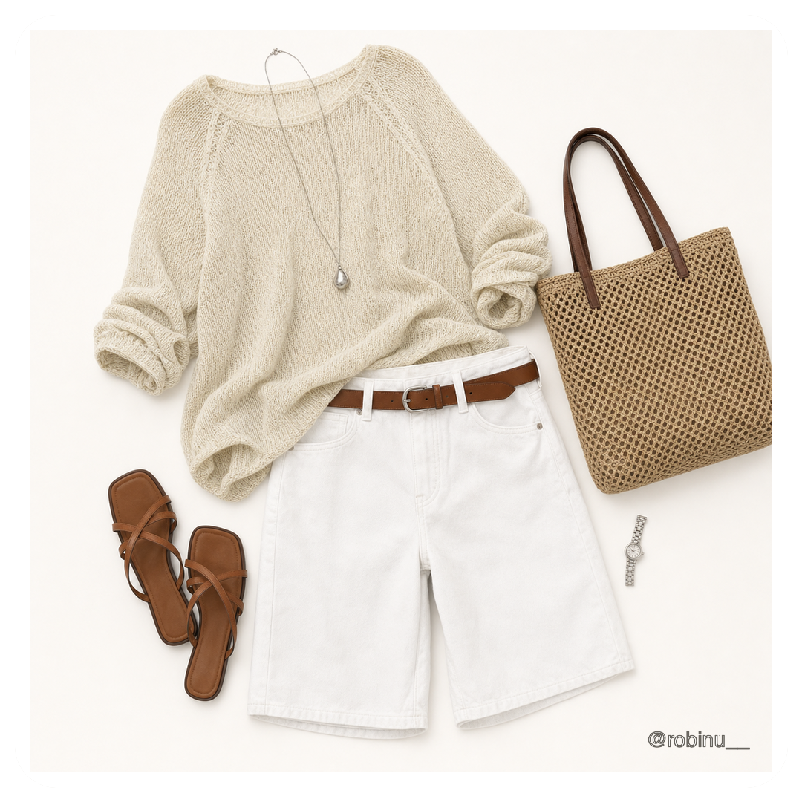

Brief
목표, 타깃, 매체와 반드시 보여야 할 내용을 한 장의 기준으로 정리합니다.
PROJECT DETAILS
프로젝트별 목적, 역할, 기준 이미지, 컷 설계와 최종 결과물을 함께 정리했습니다. 각 작업은 기획 → 생성 → 선별 → 보정 → 웹 패키징의 흐름으로 완성했습니다.
PRODUCTION PIPELINE
감에 의존하지 않고 프로젝트마다 같은 순서로 기준을 만들고 결과물을 검수합니다.
목표, 타깃, 매체와 반드시 보여야 할 내용을 한 장의 기준으로 정리합니다.
인물·제품·색상·소재·조명의 기준 이미지와 금지 조건을 고정합니다.
카메라, 동작, First/Last Frame과 전환을 컷 단위로 설계합니다.
사용할 컷을 선별하고 형태, 색감, 텍스트와 크롭 오류를 보정합니다.
영상·사운드·제작 노트를 정리하고 검토 가능한 페이지로 완성합니다.
BRIEF & PLANNING
브랜드가 해결하려는 문제와 타깃, 공개 매체, 러닝타임을 확인하고 각 컷이 해야 할 역할을 나눕니다.
REFERENCE LOCK
얼굴 비율, 의상, 제품 실루엣, 로고, 색상과 조명을 기준 보드로 만들고 생성 단계의 금지 조건을 함께 적습니다.
PROMPT & SHOT
카메라 거리와 앵글, 인물 동작, 배경, 시작·도착 프레임을 분리해 스토리보드와 컷별 프롬프트를 설계합니다.
SELECT & CORRECT
성공 컷과 실패 컷을 비교하고 얼굴·손·제품 형태, 색감, 텍스트와 크롭을 보정해 최종 후보만 남깁니다.
PACKAGE & PUBLISH
선별 이미지를 영상과 사운드로 편집하고 파일명과 폴더를 정리해 웹, 링크와 제작 노트로 패키징합니다.
APPLIED TO PROJECTS
정장과 스포츠의 대비를 고정하고 서로 다른 공간과 동작을 하나의 퍼포먼스웨어 서사로 연결했습니다.
02 / MUSINSA키비주얼 → 세대별 룩 → 스토리보드 → 프레임 제어오렌지·블랙 기준을 고정하고 서로 다른 인물과 장면을 하나의 캠페인으로 연결했습니다.
03 / SAINT얼굴 기준 → 의상 규칙 → 장면 일관성 → 보정캐릭터 기준표를 중심으로 장면이 바뀌어도 같은 인물로 읽히도록 검수했습니다.
04 / LE FAIRY제품 비율 → 향별 무드 → 6초 모션 → 제출 페이지퍼퓸밤의 형태를 유지하면서 빛, 꽃과 기포의 움직임으로 향의 차이를 표현했습니다.
01 / AI FASHION FILM
정장의 절제된 실루엣과 스포츠의 역동성을 결합해, 오피스와 코트, 트랙을 오가는 움직임 속에서 유연성과 퍼포먼스를 보여주는 AI 비즈니스웨어 캠페인입니다.
네이비 수트, 화이트 셔츠, 타이를 고정하고 테니스와 러닝의 동작을 대비시켜 AEROFLEX의 유연한 인상을 설계했습니다.
스트레칭, 랠리, 피니시 라인을 사용해 활동성과 긴장감을 만들고 인물의 수트 룩을 장면 전체에서 유지했습니다.
최종 이미지뿐 아니라 캐릭터·스포츠 장면과 전체 생성 과정을 확인할 수 있는 워크스페이스 보드까지 상세 페이지에 정리했습니다.


02 / TEAM CAMPAIGN
무진장 세일의 에너지를 오렌지 스모크와 블랙 스타일링으로 통일하고, 세대별 캐릭터·전환 효과·First/Last Frame 제어를 숏폼 캠페인으로 연결했습니다.

세대와 스타일이 달라도 오렌지·블랙 톤, 전신 실루엣, 에너지 방향이 유지되도록 기준을 세웠습니다.
오렌지 스모크, 브러시 액체, 파티클을 장면 사이의 연결 장치로 사용하고 도착 프레임을 직접 지정했습니다.
광고팀이 아이디어, 캐릭터 룩, 전환 방식과 최종 프레임을 함께 검토할 수 있게 정리했습니다.
LOOK DESIGN
키즈, 스트리트, 수트와 세대별 인물을 오렌지·블랙 캠페인 규칙 안에서 직접 설계했습니다.


STORYBOARD
서로 다른 퍼포먼스를 오렌지 시그널, 블랙 스튜디오와 빠른 전환 리듬으로 연결했습니다.


FRAME CONTROL
시작과 도착 이미지를 고정하고, 스모크·파티클·액체 궤적으로 중간 장면의 움직임을 연결했습니다.


REFERENCE CONTROL
Seedance 검열 우회와 인물 일관성 유지를 위해 얼굴 원본과 4×4 분할 그리드를 함께 사용했습니다.
전체 인상과 스타일링, 최종 조명 톤을 기준으로 잡았습니다.
얼굴의 형태 정보를 작은 셀로 나눠 세부 특징을 비교했습니다.
생성 결과의 얼굴 비율과 헤어, 렌즈, 주름 디테일을 원본과 대조했습니다.


03 / CHARACTER SYSTEM
캐릭터의 얼굴, 헤어, 의상과 세계관을 기준 보드로 고정하고, 오프닝 장면과 이미지 보정까지 반복 가능한 캐릭터 제작 시스템으로 구성했습니다.

얼굴 비율, 헤어, 의상 소재, 표정과 색상 팔레트를 프로필 시트로 정리했습니다.
카메라 거리, 조명 방향, 금지 조건과 보정 기준을 컷마다 분리해 적용했습니다.
결과물만 남기지 않고 성공 컷과 수정 기준을 함께 보관해 반복 제작에 활용했습니다.


04 / CORPORATE ASSIGNMENTS
LE FAIRY 뷰티 필름, 실사형 후기 광고, 여름 스타일링 룩북을 하나의 기업 과제 파트로 묶어 목적에 맞는 제작 방식과 결과물을 정리했습니다.
실제 퍼퓸밤의 형태와 비율을 유지하면서 수면 굴절광, 꽃과 기포의 움직임으로 세 가지 향을 시각화한 6초 광고 과제입니다.

눈밑 꺼짐과 주름의 문제 인지부터 제품 문의까지 이어지는 흐름을 설계하고, 0~3초 후킹·BGM·TTS·스토리보드를 직접 제작했습니다.


상하의, 가방, 슈즈와 액세서리를 한눈에 비교할 수 있도록 6장의 플랫레이 이미지를 정리하고, 세로형 숏폼 영상으로 전체 무드를 함께 임베드했습니다.






05 / OTHER WORKS
앱 광고, 제품 숏폼, 빛과 패브릭의 질감을 실험한 공간 이미지 작업입니다.
비어 있는 이력서 사진 칸에서 시작해 셀카 업로드, AI 보정, 프로필 적용까지 이어지는 36초 모션그래픽 광고입니다.


자연광, 얇은 패브릭, 빈티지 가구와 식물을 사용해 부드러운 공간의 감정을 이미지로 구성했습니다.


CONTACT